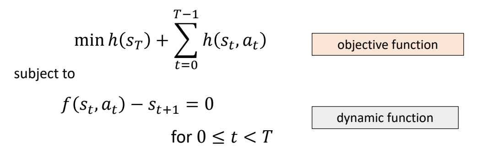
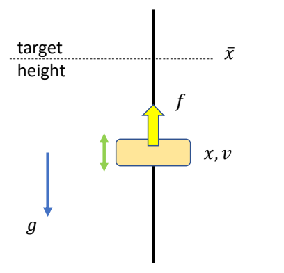
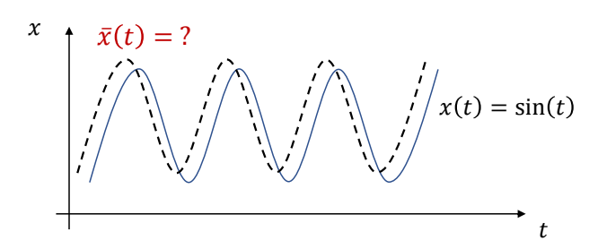
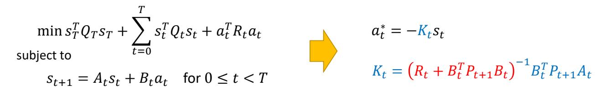

Linear Quadratic Regulator (LQR)

- LQR is a special class of optimal control problems with
- Linear dynamic function
- Quadratic objective function
✅ LQR 是控制领域一类经典问题，它对原控制问题做了一些特定的约束。因为简化了问题，可以得到有特定公式的 \(Q\) 和 \(V\).
从轨迹优化到 LQR
一般轨迹优化问题
$$ \min_{\mathbf{x}{0:T}, \mathbf{u}{0:T-1}} J(\mathbf{x}, \mathbf{u}) \quad \text{s.t.} \quad \mathbf{x}_{t+1} = f(\mathbf{x}_t, \mathbf{u}_t) $$
| 特点 | 说明 |
|---|---|
| 动力学 | 非线性：\(f(x,u)\) 是任意非线性函数 |
| 目标函数 | 任意形式：\(J(x,u)\) 可能非凸、非二次 |
| 求解难度 | 很难直接求解，需要数值方法 |
LQR 的简化假设
LQR 对一般问题做了两个关键假设：
| 假设 | 数学形式 | 效果 |
|---|---|---|
| 线性动力学 | \(x_{t+1} = A_t x_t + B_t u_t\) | 状态转移是线性的 |
| 二次目标函数 | \(J = x_T^T Q_T x_T + \sum (x_t^T Q_t x_t + u_t^T R_t u_t)\) | 代价是状态和控制的二次函数 |
好处：问题有闭式解（解析解），无需数值迭代！
如何从一般问题得到 LQR 形式
核心思想：在当前轨迹附近局部近似
一般轨迹优化问题
↓
在当前轨迹 (x̄, ū) 附近线性化
↓
δx_{t+1} = A·δx_t + B·δu_t （线性化动力学）
↓
J ≈ δx^T Q δx + δu^T R δu （二次近似）
↓
LQR 问题（有闭式解）
1. 动力学线性化
在标称轨迹 \((\bar{x}, \bar{u})\) 附近做一阶泰勒展开：
$$ f(x,u) \approx f(\bar{x},\bar{u}) + \frac{\partial f}{\partial x}(x-\bar{x}) + \frac{\partial f}{\partial u}(u-\bar{u}) $$
令 \(A = \frac{\partial f}{\partial x}\)，\(B = \frac{\partial f}{\partial u}\)，则：
定义偏差变量：\(\delta x = x - \bar{x}, \quad \delta u = u - \bar{u}\)
得到线性化动力学：
$$ \delta x_{t+1} = A_t \delta x_t + B_t \delta u_t $$
其中 \(A_t = \frac{\partial f}{\partial x}|_{(\bar{x}_t,\bar{u}t)}, \quad B_t = \frac{\partial f}{\partial u}|{(\bar{x}_t,\bar{u}_t)}\)
2. 目标函数二次化
对目标函数做二阶泰勒展开（忽略常数项和一阶项）：
$$ J \approx \frac{1}{2}\delta x^T Q \delta x + \frac{1}{2}\delta u^T R \delta u $$
其中 \(Q = \frac{\partial^2 J}{\partial x^2}, \quad R = \frac{\partial^2 J}{\partial u^2}\)
3. 求解 LQR
得到标准 LQR 问题：
$$ \min_{\delta u} \frac{1}{2}\delta x^T Q \delta x + \frac{1}{2}\delta u^T R \delta u \quad \text{s.t.} \quad \delta x_{t+1} = A \delta x + B \delta u $$
最优解：
$$ \delta u^* = -K \delta x $$
其中 \(K\) 通过 Riccati 方程求解。
4. 迭代直到收敛（iLQR 思想）
| 步骤 | 操作 |
|---|---|
| 1 | 猜测初始轨迹 \((\bar{x}, \bar{u})\) |
| 2 | 线性化动力学：计算 \(A, B\) |
| 3 | 二次化目标：计算 \(Q, R\) |
| 4 | 求解 LQR：得到 \(\delta u^* = -K \delta x\) |
| 5 | 更新轨迹：\(x \leftarrow \bar{x} + \delta x, u \leftarrow \bar{u} + \delta u\) |
| 6 | 重复 2-5 直到收敛 |
这就是 iLQR（Iterative LQR）的核心思想！
总结：LQR 在轨迹优化中的定位
| 一般轨迹优化 | LQR | |
|---|---|---|
| 动力学 | 非线性 | 线性（近似） |
| 目标函数 | 任意形式 | 二次（近似） |
| 求解方法 | 数值迭代 | 闭式解 |
| 适用范围 | 全局 | 局部（轨迹附近） |
| 与 iLQR 关系 | 原始问题 | iLQR 每轮迭代的子问题 |
关键理解：
- LQR 本身只适用于线性系统
- 但通过迭代线性化，可以用 LQR 求解非线性问题（iLQR）
- 因此 LQR 是理解 iLQR、DDP 等高级方法的基础
简单例子：方块跟踪正弦曲线
问题描述

计算一条目标轨迹 \(\tilde{x}(t)\)，使得仿真轨迹 \(x(t)\) 是正弦曲线。

✅ 目标函数是关于优化对象 \(x_n\) 的二次函数。
$$ \min _{(x_n,v_n,\tilde{x} _n)} \sum _{n=0}^{N} (\sin (t_n)-x_n)^2+\sum _{n=0}^{N}\tilde{x}^2_n $$
✅ 运动学方程中的 \(x_{n+1}\)、\(v_{n+1}\) 与上一帧状态 \(x_n\)、\(v_n\) 是线性关系。
$$ \begin{aligned} s.t. \quad \quad v _ {n+1} & = v _ n + h(k _p ( \tilde{x} _ n - x _ n) - k _ dv _ n ) \\ x _ {n+1} & = x _ n + hv _ {n+1} \end{aligned} $$
✅ 这是一个典型的 LQR 问题。
LQR 的标准形式
目标函数：
$$ \min s^T_T Q_T s_T+\sum_{t=0}^{T} s^T_t Q_t s_t + a^T_t R_t a_t $$
约束条件（动力学方程）：
$$ s_{t+1}=A_t s_t+B_t a_t \quad \text{for } 0\le t <T $$
其中：
- \(s_t\)：状态向量（state）
- \(a_t\)：控制输入（action/control）
- \(A_t, B_t\)：线性化后的系统矩阵
- \(Q_t, R_t\)：代价权重矩阵
动态规划推导（逆向归纳法）
✅ 由于存在最优子结构（optimal substructure），可以从最后一步往前推导：
- 每一步只需要考虑从当前状态到终点的最优解
- 最后一个状态的 Value 计算与 \(a\) 无关
- 计算完最后一步，再计算倒数第二步，依次往前推
Value Function 的形式
假设从时刻 \(t\) 到终点的最优代价（Value Function）具有二次形式：
$$ V_t(s) = s^T P_t s $$
其中 \(P_t\) 是对称矩阵。
最后一步的推导
考虑最后一步（从 \(T-1\) 到 \(T\)）：
$$ V_{T-1}(s_{T-1}) = \min_{a_{T-1}} \left[ s_{T-1}^T Q_{T-1} s_{T-1} + a_{T-1}^T R_{T-1} a_{T-1} + V_T(s_T) \right] $$
代入 \(s_T = A_{T-1} s_{T-1} + B_{T-1} a_{T-1}\) 和 \(V_T(s_T) = s_T^T P_T s_T\)：
$$ V_{T-1}(s_{T-1}) = \min_{a_{T-1}} \left[ s_{T-1}^T Q_{T-1} s_{T-1} + a_{T-1}^T R_{T-1} a_{T-1} + (A_{T-1} s_{T-1} + B_{T-1} a_{T-1})^T P_T (A_{T-1} s_{T-1} + B_{T-1} a_{T-1}) \right] $$
求解最优控制
对 \(a_{T-1}\) 求导并令导数为零：
$$ \frac{\partial V_{T-1}}{\partial a_{T-1}} = 2 R_{T-1} a_{T-1} + 2 B_{T-1}^T P_T (A_{T-1} s_{T-1} + B_{T-1} a_{T-1}) = 0 $$
整理得：
$$ (R_{T-1} + B_{T-1}^T P_T B_{T-1}) a_{T-1} = -B_{T-1}^T P_T A_{T-1} s_{T-1} $$
解得最优控制：
$$ a_{T-1}^* = -(R_{T-1} + B_{T-1}^T P_T B_{T-1})^{-1} B_{T-1}^T P_T A_{T-1} s_{T-1} $$
最优控制律的一般形式
$$ a_t^* = -K_t s_t $$
其中反馈增益矩阵 \(K_t\) 为：
$$ K_t = (R_t + B_t^T P_{t+1} B_t)^{-1} B_t^T P_{t+1} A_t $$
✅ 结论：最优策略是当前状态的线性函数，\(K\) 是线性反馈系数。
求解 Value Function
将最优控制 \(a_t^* = -K_t s_t\) 代回 Value Function：
$$ V_{t}(s_t) = s_t^T (Q_t + K_t^T R_t K_t + (A_t - B_t K_t)^T P_{t+1} (A_t - B_t K_t)) s_t $$
因此：
$$ P_t = Q_t + K_t^T R_t K_t + (A_t - B_t K_t)^T P_{t+1} (A_t - B_t K_t) $$
或者展开为更常见的形式（离散代数 Riccati 方程）：
$$ P_t = Q_t + A_t^T P_{t+1} A_t - A_t^T P_{t+1} B_t (R_t + B_t^T P_{t+1} B_t)^{-1} B_t^T P_{t+1} A_t $$
✅ \(V(s_{T-1})\) 和 \(V(s_T)\) 的形式基本一致，只是 \(P\) 的表示不同。
逆向递推算法
从终点往起点递推计算 \(P_t\) 和 \(K_t\)：
| 步骤 | 计算 |
|---|---|
| 初始化 | \(P_T = Q_T\)（终端代价） |
| 对 \(t = T-1, T-2, \dots, 0\) | |
| 1. 计算反馈增益 | \(K_t = (R_t + B_t^T P_{t+1} B_t)^{-1} B_t^T P_{t+1} A_t\) |
| 2. 更新 P 矩阵 | \(P_t = Q_t + K_t^T R_t K_t + (A_t - B_t K_t)^T P_{t+1} (A_t - B_t K_t)\) |
| 3. 存储 | \(K_t, P_t\) |
Solution 总结
- LQR is a special class of optimal control problems with
- Linear dynamic function
- Quadratic objective function
- Solution of LQR is a linear feedback policy
$$ a_t^* = -K_t s_t $$

离线计算：从 \(T\) 到 \(0\) 逆向递推，计算所有 \(K_t\)
在线执行：对每个时间步，应用 \(a_t = -K_t s_t\)
更复杂的情况
如何处理非线性问题？
- How to deal with
- Nonlinear dynamic function?
- Non-quadratic objective function?
✅ 人体运动涉及到角度旋转，因此是非线性的。
解决方案：
| 方法 | 核心思想 |
|---|---|
| iLQR | 迭代线性化 + LQR 求解 |
| DDP | 二阶泰勒展开 + 动态规划 |
| CMA-ES | 无导数优化（不需要线性化） |
这些方法将在后续章节介绍。
本文出自 CaterpillarStudyGroup，转载请注明出处。
https://caterpillarstudygroup.github.io/GAMES105_mdbook/